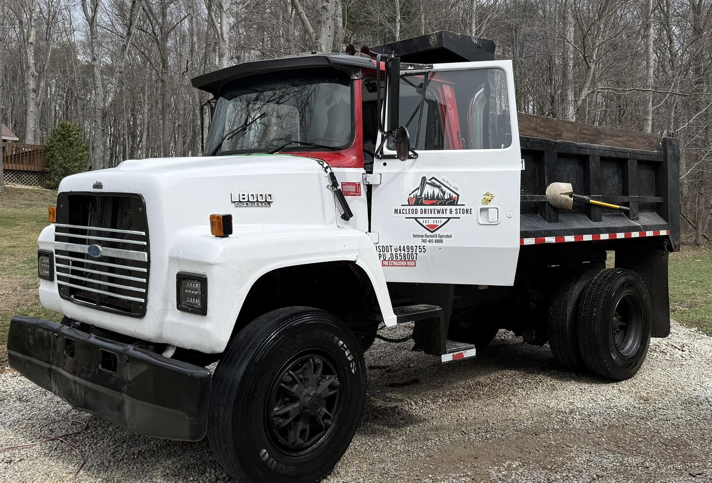

Company Story
A professional introduction to your experience, values, process, and the work you want more of.
I create videos, websites, and social content for contractors and hands-on businesses. When there is a strong fit, I am also open to creative partnerships that exchange marketing expertise for professional services.
Contractors already have the raw material for effective marketing: difficult problems, visible progress, specialized equipment, and finished work they are proud of.
This commercial for Corey's Stump Grinding turned a specialized contractor service into a short, approachable story for local viewers.
It demonstrates the same opportunity available in excavation, forestry mulching, driveway work, drainage, landscaping, and other visually strong trades: show the work, explain the value, and give customers a reason to remember the name.

Ten Peak Media helped translate hands-on driveway, drainage, gravel, and light-excavation work into a focused online presence for rural property owners in the Hocking Hills area.
The website establishes local credibility, organizes the services clearly, and gives prospective customers a simple path to describe the job and request work.
Visit MacLeod WebsiteA professional introduction to your experience, values, process, and the work you want more of.
Before, during, and after documentation that explains the challenge, your approach, and the result.
Short videos and photographs you can use over several months on Facebook, Instagram, and YouTube.
A credible place to show services, projects, proof, and a clear way to request an estimate.
Real customers explaining the communication, reliability, and finished result in their own words.
Regular content built around selected jobs, progress milestones, equipment, and finished work.
Hire Ten Peak Media for a defined video, website, or content package with a clear scope, schedule, and fee.
A portion of the marketing work can be exchanged for contractor services, with both sides agreeing on a clear dollar value and scope.
Build content around selected projects over time while combining an agreed mix of contractor services, referrals, project access, or payment.
The right structure depends on what each business needs. The first step is simply comparing those needs and deciding whether the value makes sense on both sides.
Good marketing should feel like an extension of the work—not a layer of polish hiding what is underneath.
I started the Community Advertising Network in Marion to help small businesses access professional advertising and original commercial content.
That experience shaped the way I still work today: understand the business, find what makes it valuable, and create marketing that feels authentic to the people behind it.
We can compare needs, define the value on both sides, and see whether a conventional project, partial trade, or longer-term partnership makes sense.